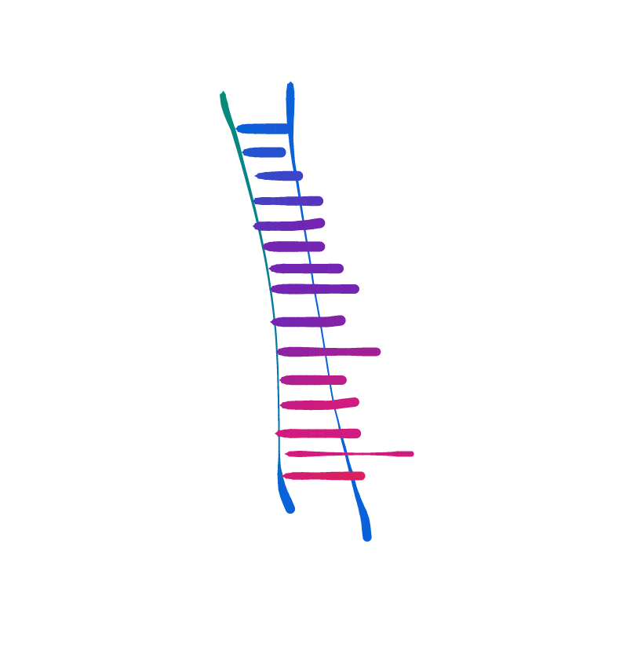

Coding Magic
Learning to code is hard.
I sit down to learn, then blink, and find myself across the room. I take my own hand and walk back over to the code.
Learning to code is a game of snakes and ladders, with only snakes.
WHERE ARE THE LADDERS?
As a child, typing cryptic inscriptions into a computer felt mysterious and sacred, a garden of forking paths.
But in the classroom the magic disappeared. The secret garden was replaced with a highway of rote memorization and right answers.

One computer teacher said to me, gently:
“Marie, you are a very bright girl. You are gifted at many things, but this is simply not for you.”
Other computer teachers said other things, to my face or in my earshot.
“She’ll never get it.”
“It’s a waste of time with some people”
“Marie, I didn’t know you were identified“
(The last one misread my file label and thought that my gifted identification was a different kind of identification. I never corrected her, I decided that she was probably right.)

Since then, I’ve read and watched a handful of learn-to-code tutorials. Friends have tried to teach me. I’ve taken some one-day classes, and dropped out of some MOOCs (Massive Open Online Courses).
But when I cautiously peer into the code, I smell the mothball-breath of a hundred irritated professors while a wall clock ticks away the seconds of my life.

I enter the interaction with a certainty that I won’t get it, I can’t get it. My confidence, my resourcefulness, my intelligence all abandon me.
When a teacher (even a very nice teacher) asks me a question (even a very simple question) I freeze up like an overheated computer, or a frightened animal.
Everything is jumbled, frozen, alien.

I have no knowledge-base to build from, to grow my structures of understanding. The concepts I manage to cram into my brain have nothing to hook onto, they spin and float through my mind until the entropy turns them to dust, and then to nothing at all.
 

When I use metaphor to tether these new ideas to my brain, most straight-collar-engineers push back at my comparisons. In a field where precision is everything, inexactitude is sacrilege.
They say:
“It’s easy. It’s not like that, it’s JARGON runs COMPLICATED CONCEPT in UNFAMILIAR WORD through the X of UNFAMILIAR WORD. See, easy!”
Not easy.
I learn by metaphor. All learnt ideas begin in metaphor, and all true understanding comes when the new idea starts to outgrow the metaphor it was carried in on.
So I will continue with my bad metaphors. I will keep showing up and throwing around bad metaphors until one sticks.
And code might not be for me, but I am for code. I want to learn. I refuse to believe that it’s not for me.
I will figure it out, even if I need to take the long way.
Here is my mind trying to map itself to these ideas, grasping at metaphor and then stretching-to-break when the metaphor spreads apart too far.
Let’s begin.
THREE TRUTHS
Here is something I know for certain. There are three truths of code:
Truth One: You are a god, and everything that is, and everything that happens, intentionally or not, happens because you declared it to be so.
Truth Two: There are constraints. They are made up, and you can work around them, but they are embedded right in the game.
Truth Three: There are and always will be unknowns. Work on building what on what you know, a small construction in the infinite void of unknowns.
NAMES:
As you know from reading fairy stories, when you have the one true name of someone, you have infinite power over them.
A name pulls a thing out of the mass. A name pulls all the pieces of a thing together and calls it into being as a unique object. Without your own name, you are just another human in a giant human mass. Without the name “human” you are a non-unique, non identifiable blob in a giant matter mass.

Names divide a thing from the rest of the things, but they also can serve to group and categorize, to make anything sortable and countable. These kind of names stretch over named things, lumping things together under so that you can command them in groups. Like “mammals” or “humans” or “candy ravers.”

Names are made-up, arbitrary, irrelevant lies. But they are lies that point at something specific, and pointing is true and useful, and has great power.
“The name is the thing, and the true name is the true thing. To speak the name is to control the thing.”
― Ursula K. Le Guin, The Rule of Names.
WHY WE NAME:
Because of names, we can say “get me all the apples” rather than describing what an apple is (and is not), or listing each apple individually.

We can abstract away from each individual apple as a unique existential object with a personal history. We can abstract even further away from the idea of an “apple” and move into the very abstract territory of fruit, or food, or cells.
HOW WE NAME:
In code, we do naming in a strange way.
In everyday life, we name things out of need: often because we happen to encounter a thing without a name. In programming, we name things because we are actively choosing to encounter them.
We call them into being: when we find a need to fill, we name the solution to make it be. If this isn’t exploding your mind, you need to think about it some more.
NAMES AS BOXES:
You can think about names as empty boxes, empty boxes that are then filled with things. This is a strange way to think about it, but maybe it is useful for you. In some ways it makes sense, because programmers are often using these names, then dumping out the contents and filling them with new things.

To understand this way of thinking, you need to understand that programmers are rarely thinking about a single individual or a single thing. They are thinking about giant lists of things, and wanting to run the same instructions on the entire list. If they wanted to do something to a single person or object, they wouldn’t need a program, they would just do it manually. Programs are for many, by their very nature.
LEARNING NAMES:
In code, we name so we can easily question, manipulate, and control the named things.
In any language that you learn, there are names you make up, and names you need to learn: names that come built in to the game. The magic you will build is one top of many different magics.
Unless you are going to build your own language from machine code (even if you do!) you will need to learn some of these built-in names. Without understanding the basic names, you are powerless to build your magic on top.

The names we use can feel arbitrary and meaningless, but pay close attention to the way you name and define and sort groups of things. There is great power (and great invisible limitation) in the way we sort. Everything that happens will be dependent on how you organize the information.
NUMBERS:
Numbers are built-in names. They are representations for things. Because of the nature of coding, and because of the nature of mathematicians, numbers are usually written right into the code, you don’t get to define them at all.

Most coding tutorials that I have read (or watched) start by showing you how to do arithmetic in the terminal. This is pretty boring, unless you understand the implications: we can do big things using small numbers.
Numbers are a powerful way of understanding or sorting the world. They make it really easy to see patterns and play long games, because of the way they relate to each other.
Enjoy the power of numbers, but never forget what they are. They look pure and transparent, but that is a lie. Numbers are names: imaginary categorical representations.
0, 1, 2, 3, 4, 5, 6, 7, 8, 9 are just a list of symbols. Symbols that represent mathematical concepts. There are no numbers in computers, there are only patterns of bits.
PROBLEMS:
All code is about solving problems.
In code, as in life, all problems are a matter of circumstance. That is: no problem is always a problem. Being hungry is not a problem at a feast. Being full is not a problem on a fast.

And the problem, itself, is always part of the circumstance. Don’t make the mistake of thinking that the problem is an alien to its circumstance.
There is nothing more native or natural than a problem. It belongs to the circumstance and the circumstance belongs to it.
KNOWING PROBLEMS:
More time should be put into coming to know a problem than solving it. You need to hear or read the problem, and then you need to start spinning it around. Most parts of a problem aren’t integral parts of the problem, they are coincidental happenings.

You need to be able to identify the precise intersection where x (whatever x is) is blocking the desired state. Can x be moved? Can x be transformed? What purpose does x serve? How does it fit into the larger circumstance?
THE FLOW:
When considering problems, we are really discussing movement, we are considering flow. If there is no needed flow, no desired movement, then there is no problem.
To see a problem clearly, you must see your flow clearly. What is your flow? Is it stripped down to its base parts? Are there unnecessary complications and clutter making it hard to identify?
Most importantly, why do you need this flow?
SPELLS:
Once you are certain about your problem and your flow, you are ready to cast spells.
Spells are things that happen when you type the right words and/or numbers. The basic spells are built right into the code. They can be put together and made to do strange things. You need to learn spells, just like you learn names. Then you can use those spells, and your own spells, to make magic.
Good spells are responsive and flexible. They work in tiny, irrelevant circumstances and they work in huge, enormous circumstances. They fit well into others, and they work well alone. Intuition is invaluable.
Spells may look like they are about making your will be reality, but they are a lot more than that. Good spells are about bringing reality into alignment with itself. Good spells are about unblocking things for optimal flow.
Code is magic. And making magic is the truest way of being in the world.